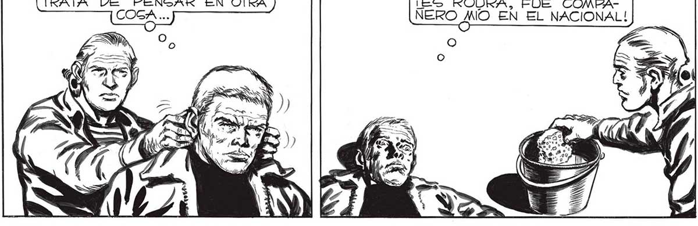
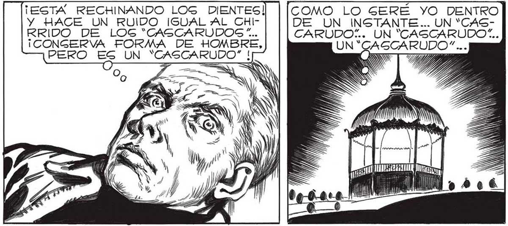

ESE APARATO LLENO DE BOTONES HA DE Í SER LA CENTRAL CON LA QUE MANEJA, ? l A VOLUNTAD, A LOG '"CASCARUDOS”, Y A NUS LOG HOMBRES - ROBOTS... ¿QUE LES ESTARA ORDENANDO 2 yn ima . Í a SS > Se TRANQUILO, JUAN... DE NADA GIRVE PERDER LA CABEZA... TRATA DE PENGAR EN OTRA A PROPOGSITO..¡A ESTE HOMBRE LO CONOZCO! 1iGÍ1 ¡ES ROURA, FUE COMBANERO ANO EN EL NACIONAL! ¿QUÉ HACE AHORA 2)? 2 Z PERO ES UN ME ESTÁN DEGINFECTAN- 1395 DO LA NUCA... ¡ PREPARANDOME PARA INGERTARME EL ARSEATE , NO ME RECONOCE... CLARO, AHORA ES UN HOMBRE-RO- [2 ES 507..cCOMO YO LO GERE P AN DENTRO DE_POCO.. PERO... ¡ESTA RECHINANDO LOG DIENTES! COMO LO SERE YO DENTRO Y HACE UN RUIDO IGUAL AL CHI- DE UN INSTANTE... UN “CASRRIDO DE LOG “CASCARUDOC.!... ¡CONGERVA FORMA DE HOMBRE, CARUDO”.. UN "CASCARUDO... UN “GAGCARUDO” ... qq5ó any | SU JM t2ó TULA

